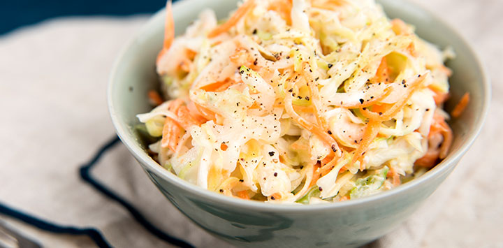

- Ensaladas
-

-

- 
- Ensalada de pasta
- Ensalada Mixta
- Ensalada de Col
-
- Postres
- Postre de frutas
- Brownies
- Tartas tipo Italia
-
- Plato Principal
- Tacos de Asada
- Rib Eye
- Lasagna
-
- Bebidas
- Coca-Colo
- Agua de Sabor Natural
- Te Frio - Limon